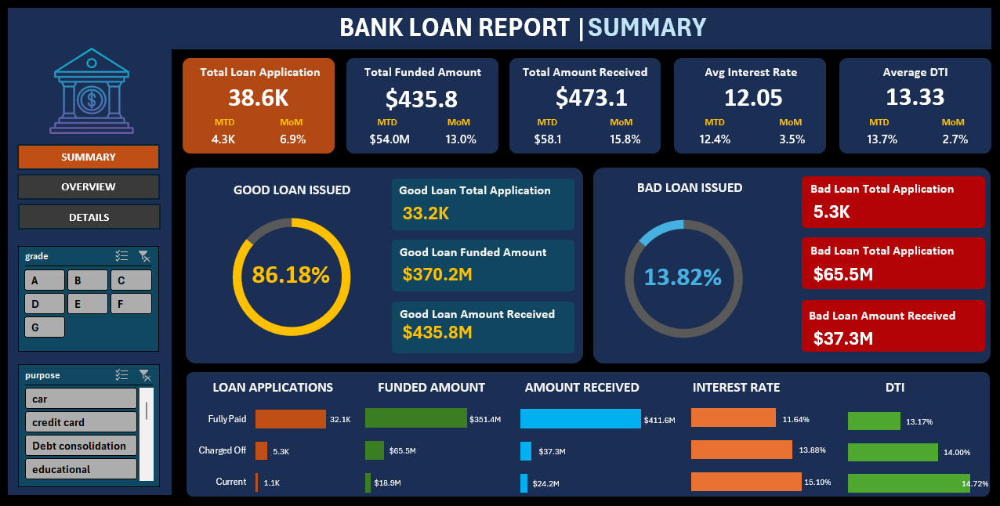
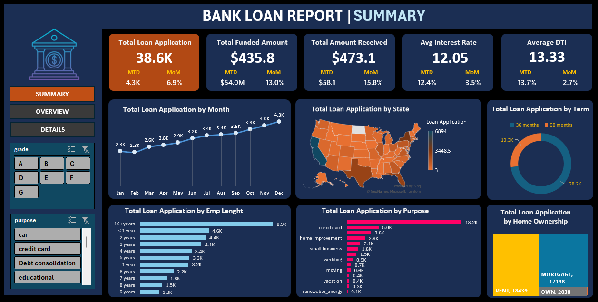

An interactive finance dashboard developed using Power BI and Microsoft Excel to analyse loan applications, funded amounts, repayments, customer risk, and lending performance.
← Back to PortfolioThe Bank Loan Report Dashboard provides a comprehensive view of loan applications, approvals, repayments, customer performance, and financial KPIs. The dashboard enables financial institutions to monitor lending activities, evaluate portfolio quality, and make informed business decisions through interactive reporting.
Banks receive thousands of loan applications every month. Analysing funded amounts, repayments, loan quality, customer risk, and lending trends manually is time-consuming and inefficient. The objective of this project was to build an interactive dashboard that provides a clear overview of loan performance and supports faster, data-driven financial decisions.
Data Cleaning, Data Transformation, Power Query, DAX, Data Modelling
Dashboard Development, KPI Reporting, Interactive Charts & Visualisations


Track all submitted loan applications.
Monitor the total amount funded to customers.
Analyse repayments received from customers.
Compare healthy and high-risk loans.
Evaluate average lending interest rates.
Assess customer repayment capability.
Track loan application growth over time.
Identify the most common borrowing purposes.
This dashboard provides financial institutions with a clear and interactive view of lending performance. By combining data cleaning in Power BI with dashboard development in Microsoft Excel, the solution supports better financial analysis, risk assessment, and strategic decision-making.